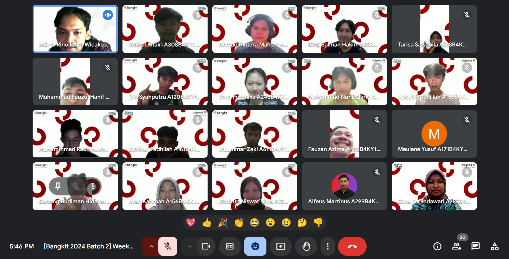
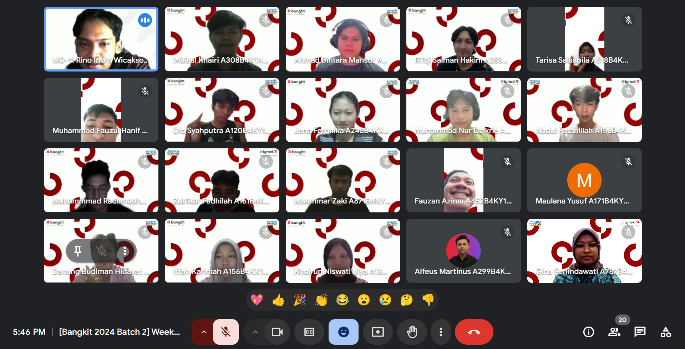

Experience
Student Internship
Aug - Oct 2019
When I was in high school, I did an internship for almost 3 months at Fastabiq Sehat Pati Hospital. The jobdesk that I did during my internship was Learning to create websites using Wordpress, Learning to create websites using PHP Native and Bootstrap, Assisting with office and application installations, and troubleshooting.
IT Support & Data Management
Aug 2022 - Now
I am currently working at Safin Pati University as part of the information systems center team as a junior web developer and network administrator. In addition, I also take care of several college information systems. During my time as a junior web developer, I have created the Safin Pati Sport School website using laravel and several university websites using wordpress.
SOC Analyst Tier 1
Aug 2024 - Feb 2025
Internship as SOC Analyst Tier 1 for 6 months at PT Neotech Cakrawala Indonesia. The jobdesk that I did during my internship was monitoring using Stellar XDR for the Indonesian Ministry of Health and Sophos EDR, blocking anomalous and malicious ip addresses, dorking a domain to check for online gambling defacement, and making reports.
Junior Security Operation Center Analyst - Digitalent Kominfo
Feb - May 2024
The Junior SOC Analyst Bootcamp will learn routing, switching, and cyber security as a Security Operations Center (SOC) Analyst. This training starts with an introduction to the concept of cyber security. In the next stage, participants will learn Cyber Operations to understand the concept of cyber security, operating systems, security management at the enterprise level (especially in making policies), the concept of cyber security analyst, including hands-on penetration testing and its detection.
Bangkit Academy 2024 By Google, GoTo, Tokopedia, Traveloka - Android Learning Path
Sep - Dec 2024
Android Application Developer Independent Study activities include individual learning and a final project in the form of a team. In individual learning, each participant will attend classes in an asynchronous form (online through the learning module at Dicoding Academy) where participants can consult with experts regarding the material they learn through discussion forums. In addition, each participant will have a mentor as a place of consultation if non-academic difficulties are encountered in following the learning.
 
